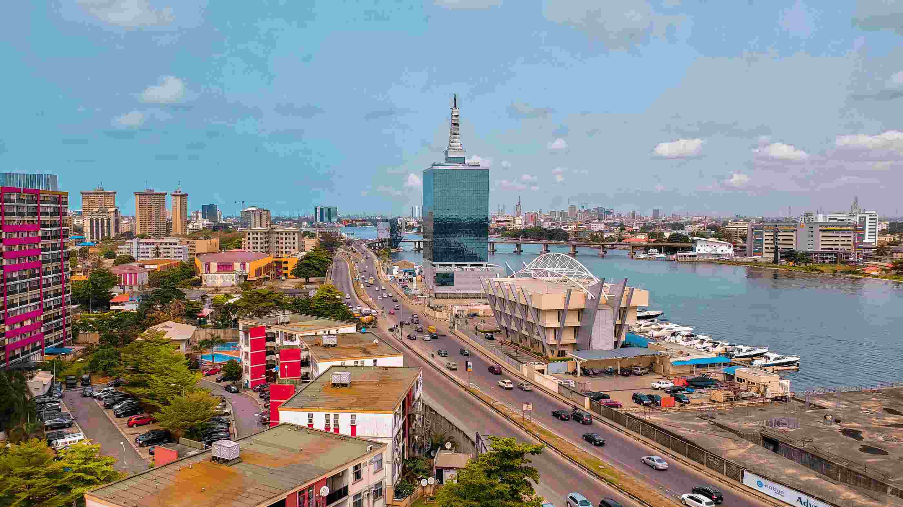

About Me
Hello! My name is Goodluck Adesayo. I am excited to be part of this class and
looking forward to learning
more about web development. I have a background in computer science and have always been fascinated
by the web.
In my free time, I enjoy hiking, reading, and exploring new technologies.
Lagos, Nigeria
I am originally from Lagos, Nigeria. Lagos is a vibrant city known for its bustling
markets, beautiful
beaches, and rich cultural heritage.
It is the largest city in Nigeria and one of the fastest-growing cities in Africa.
I am proud to call Lagos my home and look forward to sharing more about my culture and experiences
throughout this course.
My Hobbies and Interests
- Hiking and exploring nature trails.
- Reading science fiction and fantasy novels.
- Experimenting with new cooking recipes.
- Learning about emerging technologies and trends in the tech industry.